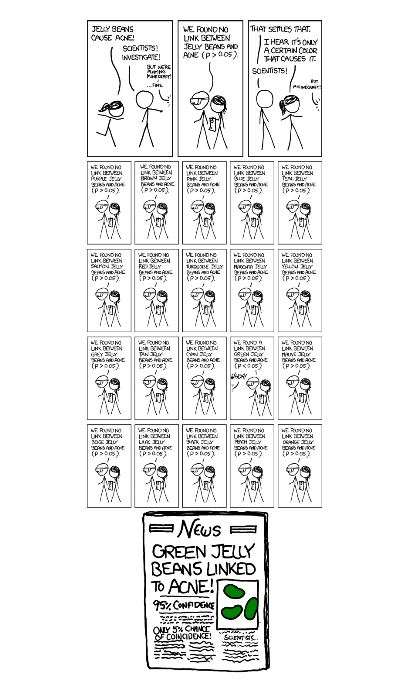
Lesson 22: One Proportion Z-Test

What We Did: Lessons 17–21
NoteLesson 17: Central Limit Theorem
The Central Limit Theorem (CLT): If \(X_1, X_2, \ldots, X_n\) are iid with mean \(\mu\) and standard deviation \(\sigma\), then for large \(n\):
\[\bar{X} \sim N\left(\mu, \frac{\sigma^2}{n}\right)\]
Standard Error of the Mean: \(\sigma_{\bar{X}} = \frac{\sigma}{\sqrt{n}}\)
Rule of thumb: \(n \geq 30\) unless the population is already normal.
NoteLesson 18: Confidence Intervals I
Confidence Interval for a Mean:
| Formula | When to Use | |
|---|---|---|
| Large sample (\(n \geq 30\)) | \(\bar{X} \pm z_{\alpha/2} \cdot \dfrac{\sigma}{\sqrt{n}}\) | Random sample, independence, \(s \approx \sigma\) |
| Small sample (\(n < 30\)) | \(\bar{X} \pm t_{\alpha/2, n-1} \cdot \dfrac{s}{\sqrt{n}}\) | Random sample, independence, population ~ Normal |
Key ideas: Higher confidence → wider interval. Larger \(n\) → narrower interval.
NoteLesson 19: Confidence Intervals II
Confidence Interval for a Proportion:
\[\hat{p} \pm z_{\alpha/2} \cdot \sqrt{\frac{\hat{p}(1-\hat{p})}{n}}\]
Conditions: \(n\hat{p} \geq 10\) and \(n(1-\hat{p}) \geq 10\)
Interpretation: “We are C% confident that [interval] captures the true [parameter in context].” The confidence level describes the method’s long-run success rate, not the probability any single interval is correct.
NoteLesson 20: Intro to Hypothesis Testing
Every hypothesis test follows four steps:
- State hypotheses: \(H_0\) (null — status quo) vs. \(H_a\) (alternative — what we want to show)
- Compute a test statistic: How far is our sample result from what \(H_0\) predicts?
- Find the \(p\)-value: If \(H_0\) were true, how likely is a result this extreme or more?
- Make a decision: If \(p \leq \alpha\), reject \(H_0\). If \(p > \alpha\), fail to reject \(H_0\).
NoteLesson 21: One Sample t-Test
One-sample \(t\)-test for a mean (\(\sigma\) unknown):
\[t = \frac{\bar{x} - \mu_0}{s / \sqrt{n}}, \qquad df = n - 1\]
Conditions: Random sample, independence (\(n < 10\%\) of population), population approximately normal or \(n \geq 30\).
\(p\)-value: Use pt() with \(df = n-1\).
What We’re Doing: Lesson 22
Objectives
- Review the one-proportion \(z\)-test
- Test \(\mu_1 - \mu_2\) with independent samples
- Choose pooled vs. Welch procedures appropriately
- Construct and interpret CIs for \(\mu_1 - \mu_2\)
Required Reading
Devore, Sections 8.4, 9.2
Break!
Reese
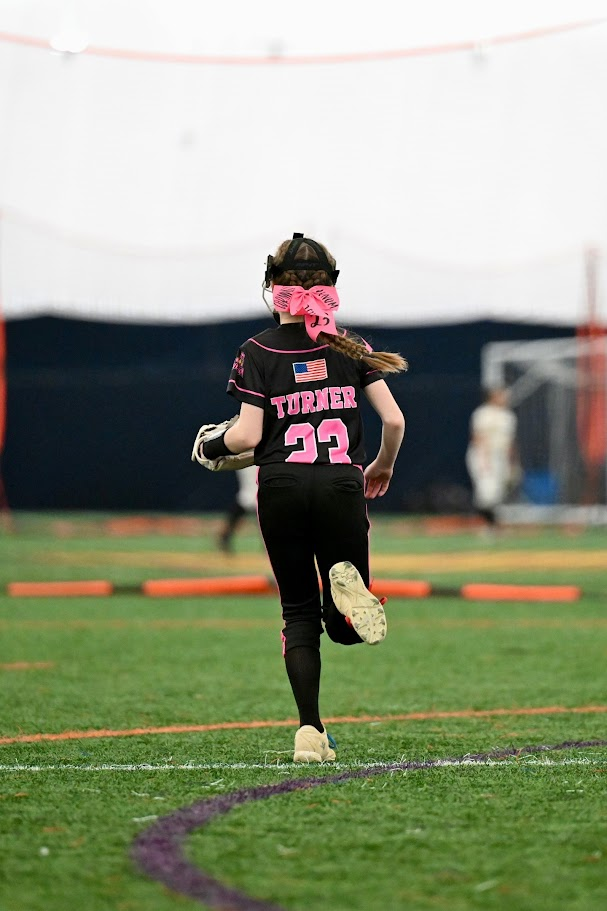
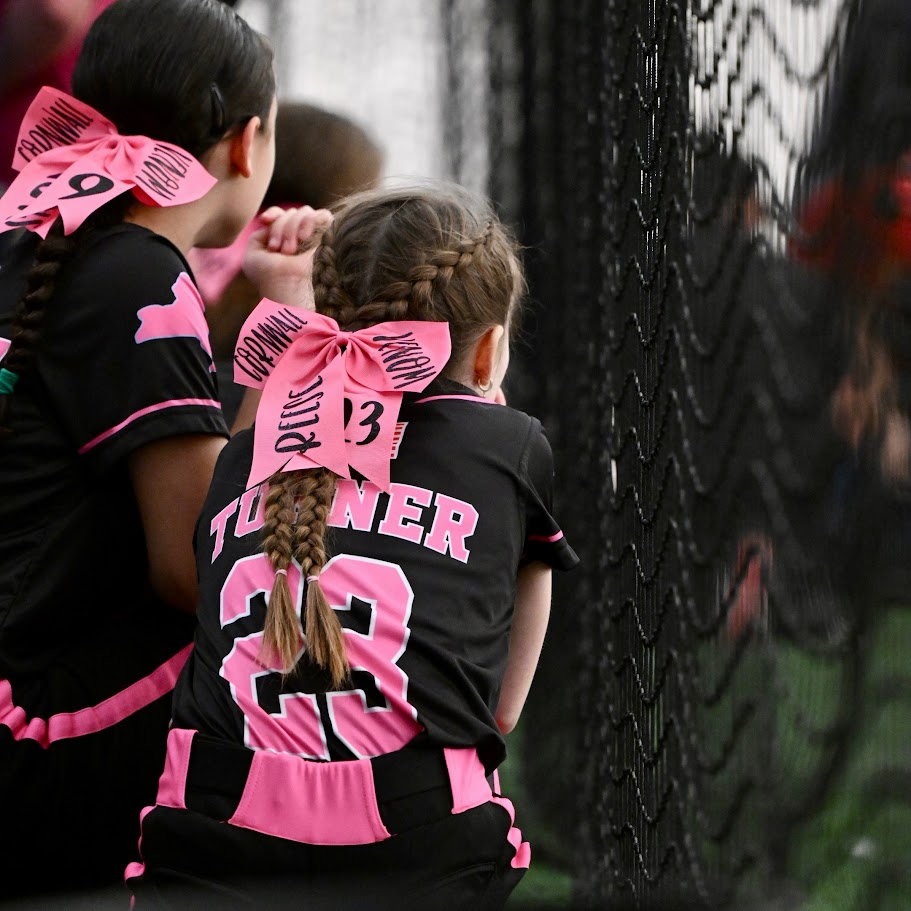
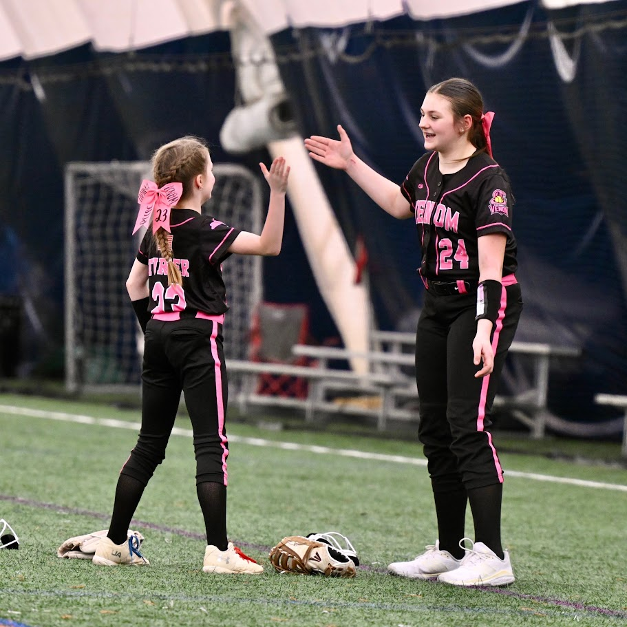
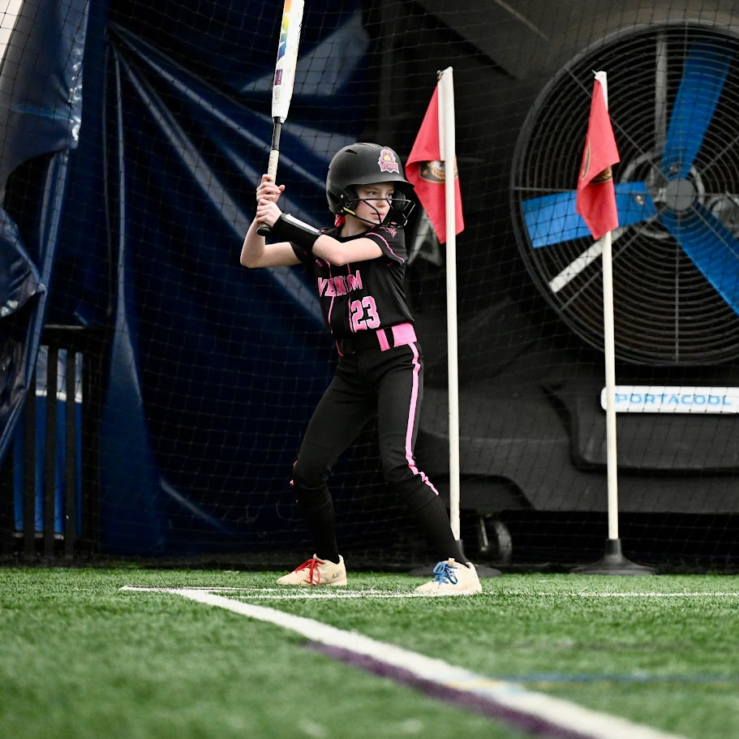
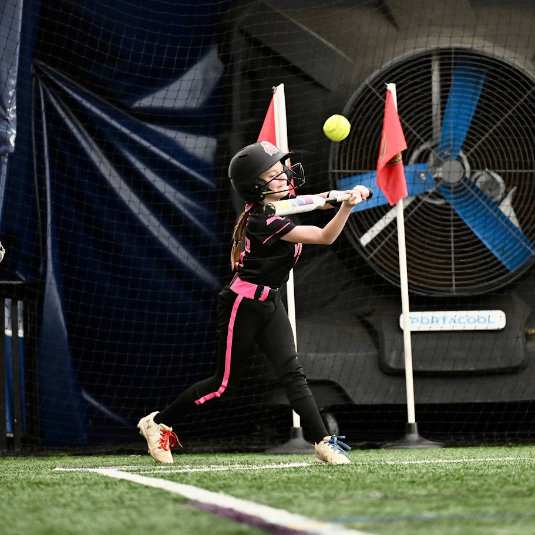
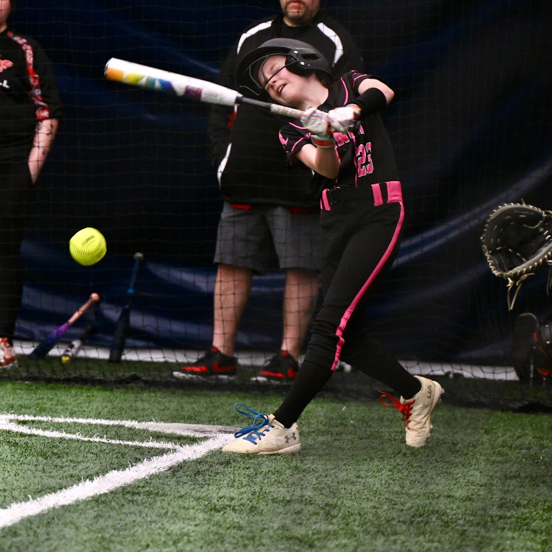
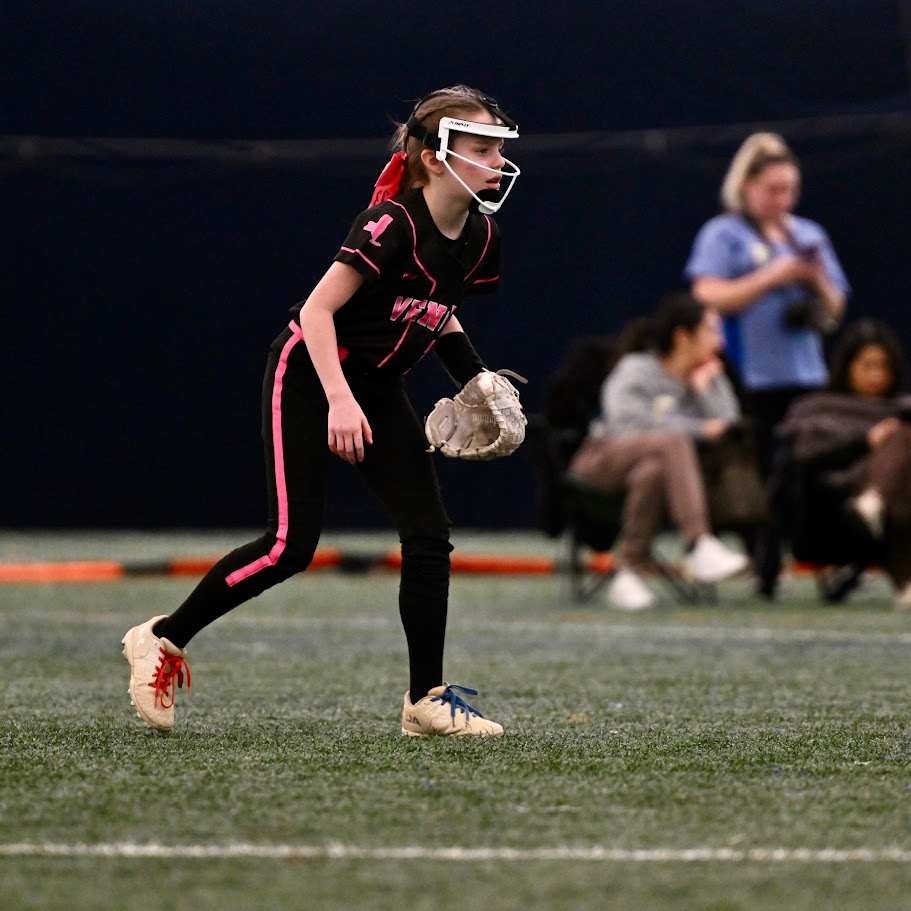
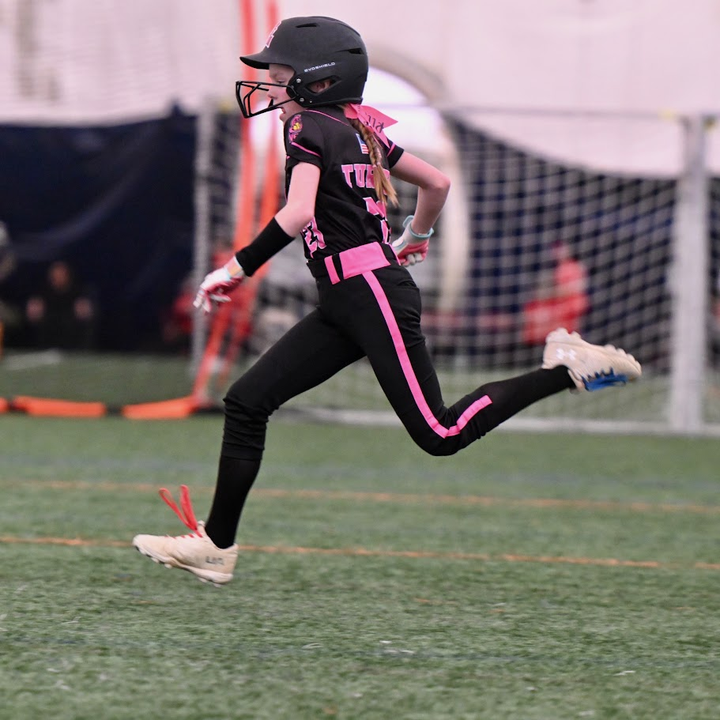
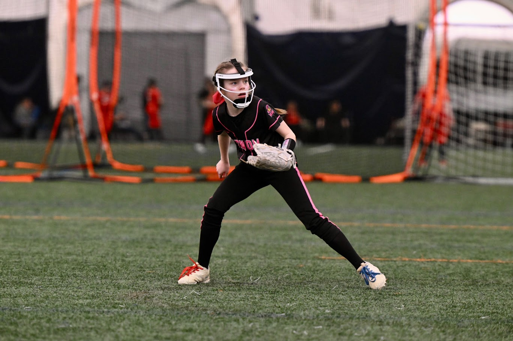
Cal
DMath Basketball!!
Math vs DELPHI
NotePreviously 11-5
12-5

DMath Basketball!!
Math vs DELPHI
NotePreviously 12-5
13-5
Review: The Inference Toolkit
NoteSummary of Confidence Intervals
| One-Sample Mean (Large Sample) | One-Sample Mean (Small Sample) | One Proportion | |
|---|---|---|---|
| Parameter | \(\mu\) | \(\mu\) | \(p\) |
| Formula | \(\bar{x} \pm z_{\alpha/2} \cdot \dfrac{\sigma}{\sqrt{n}}\) | \(\bar{x} \pm t_{\alpha/2,\, n-1} \cdot \dfrac{s}{\sqrt{n}}\) | \(\hat{p} \pm z_{\alpha/2} \cdot \sqrt{\dfrac{\hat{p}(1-\hat{p})}{n}}\) |
| Conditions | \(n \geq 30\) | Normal pop or \(n \geq 30\) | \(n\hat{p} \geq 10\) & \(n(1-\hat{p}) \geq 10\) |
NoteSummary of Hypothesis Tests
| One-Sample Mean (Large Sample) | One-Sample Mean (Small Sample) | One Proportion | Two-Sample Mean | Paired Mean | Two Proportions | |
|---|---|---|---|---|---|---|
| Parameter | \(\mu\) | \(\mu\) | \(p\) | |||
| \(H_0\) | \(\mu = \mu_0\) | \(\mu = \mu_0\) | \(p = p_0\) | |||
| \(H_a\) | \(\mu \neq, <, > \mu_0\) | \(\mu \neq, <, > \mu_0\) | \(p \neq, <, > p_0\) | |||
| Test Statistic | \(z = \dfrac{\bar{x} - \mu_0}{\sigma / \sqrt{n}}\) | \(t = \dfrac{\bar{x} - \mu_0}{s / \sqrt{n}}\) | \(z = \dfrac{\hat{p} - p_0}{\sqrt{p_0(1-p_0)/n}}\) | |||
| Distribution | \(N(0,1)\) | \(t_{n-1}\) | \(N(0,1)\) | |||
| Left-tailed \(p\)-value | pnorm(z) |
pt(t, df=n-1) |
pnorm(z) |
|||
| Right-tailed \(p\)-value | 1 - pnorm(z) |
1 - pt(t, df=n-1) |
1 - pnorm(z) |
|||
| Two-tailed \(p\)-value | 2*(1 - pnorm(abs(z))) |
2*(1 - pt(abs(t), df=n-1)) |
2*(1 - pnorm(abs(z))) |
|||
| Conditions | \(n \geq 30\) | Normal pop or \(n \geq 30\) | \(np_0 \geq 10\) & \(n(1-p_0) \geq 10\) |
Decision rule is always the same: \(p \leq \alpha\) → Reject \(H_0\). \(p > \alpha\) → Fail to reject \(H_0\).
Last Class: The One-Proportion \(z\)-Test
Last class we tested hypotheses about a population mean \(\mu\). Now we shift to a population proportion \(p\).
ImportantOne-Proportion z-Test
Hypotheses:
\(H_0: p = p_0\)
\(H_a: p < p_0\)
\(H_a: p > p_0\)
\(H_a: p \neq p_0\)
Test statistic:
\[z = \frac{\hat{p} - p_0}{\sqrt{\dfrac{p_0(1 - p_0)}{n}}}\]
Conditions: \(np_0 \geq 10\) and \(n(1 - p_0) \geq 10\)
Review Example: DMath Basketball Free Throws
The DMath basketball team claims they shoot better than 50% from the free-throw line. In their last \(n = 80\) free-throw attempts, they made 48.
Check conditions: \(np_0 = 80(0.50) = 40 \geq 10\) and \(n(1-p_0) = 80(0.50) = 40 \geq 10\). Good to go.
Step 1: State the Hypotheses
\[H_0: p = 0.50 \qquad \text{vs.} \qquad H_a: p > 0.50\]
Step 2: Compute the Test Statistic
\[z = \frac{\hat{p} - p_0}{\sqrt{\dfrac{p_0(1 - p_0)}{n}}} = \frac{0.60 - 0.50}{\sqrt{\dfrac{0.50(0.50)}{80}}} = \frac{0.10}{0.0559} = 1.79\]
n <- 80; x <- 48
p_hat <- x / n; p0 <- 0.50
se <- sqrt(p0 * (1 - p0) / n)
z <- (p_hat - p0) / se
z[1] 1.788854Step 3: Find the \(p\)-Value
This is right-tailed, so we want \(P(Z \geq z)\):
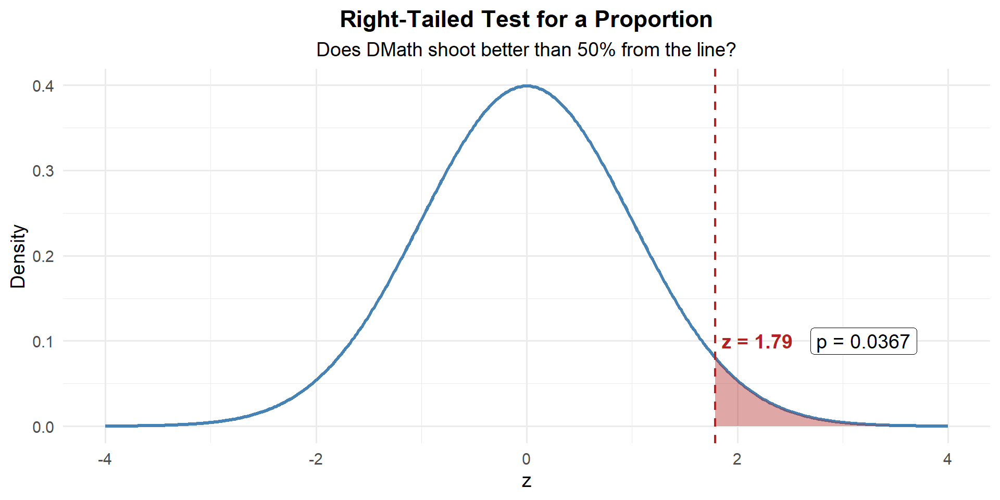
p_value <- 1 - pnorm(z)
p_value[1] 0.03681914\[p\text{-value} = P(Z \geq 1.79) = 0.0368\]
Step 4: Decide and Conclude
At \(\alpha = 0.05\): \(p = 0.0368 \leq 0.05\). We reject \(H_0\). At the 5% significance level, there is sufficient evidence that DMath shoots better than 50% from the free-throw line.
New Material: The Two-Sample \(t\)-Test
So far every test we’ve done compares one sample to a fixed value (\(\mu_0\) or \(p_0\)). But what if we want to compare two groups to each other?
- Do cadets who study with a tutor score higher than those who don’t?
- Do Soldiers at Fort Bragg run faster than Soldiers at Fort Drum?
- Does a new rifle cleaning method reduce maintenance time compared to the standard method?
These questions all ask: Is there a difference between two population means?
For example: Do students taught by LTC Turner perform better (or worse) than students taught by MAJ Day?
What are we really asking? \(\mu_T - \mu_D > 0\)?
That sounds like… an alternative hypothesis!
\[H_a: \mu_T - \mu_D > 0\]
And where there’s an alternative, there’s a null:
\[H_0: \mu_T - \mu_D = 0\]
Now what do we need? Data.
| LTC Turner | MAJ Day | |
|---|---|---|
| \(n\) | 52 | 54 |
| \(\bar{x}\) | 82.3 | 80.1 |
| \(s\) | 10.5 | 11.2 |
# LTC Turner's sections (18 + 18 + 16 = 52 students)
n_turner <- 52; xbar_turner <- 82.3; s_turner <- 10.5
# MAJ Day's sections (18 + 18 + 18 = 54 students)
n_day <- 54; xbar_day <- 80.1; s_day <- 11.2Both samples are large (\(n \geq 30\)), so by Devore we can use the two-sample \(z\)-test:
\[z = \frac{(\bar{x}_{T} - \bar{x}_{D}) - (\mu_T - \mu_D)}{\sqrt{\dfrac{s_{T}^2}{n_{T}} + \dfrac{s_{D}^2}{n_{D}}}}\]
Under \(H_0\): \(\mu_T - \mu_D = 0\), so:
\[z = \frac{(82.3 - 80.1) - 0}{\sqrt{\dfrac{10.5^2}{52} + \dfrac{11.2^2}{54}}} = \frac{2.2}{\sqrt{2.120 + 2.323}} = \frac{2.2}{2.108} = 1.04\]
se <- sqrt(s_turner^2 / n_turner + s_day^2 / n_day)
z_stat <- (xbar_turner - xbar_day) / se
z_stat[1] 1.043703Step 3: Find the \(p\)-Value
This is right-tailed, so we want \(P(Z \geq z)\):
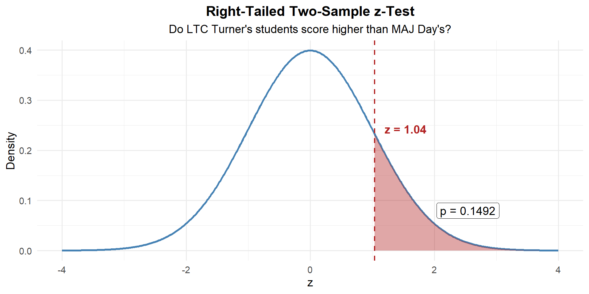
p_value <- 1 - pnorm(z_stat)
p_value[1] 0.1483114Step 4: Decide and Conclude
At \(\alpha = 0.05\): \(p = 0.1483 > 0.05\). We fail to reject \(H_0\). At the 5% significance level, there is not sufficient evidence that LTC Turner’s students scored higher than MAJ Day’s students on the WPR.
The Setup (General)
We have two independent groups:
| Group 1 | Group 2 | |
|---|---|---|
| Population mean | \(\mu_1\) | \(\mu_2\) |
| Sample size | \(n_1\) | \(n_2\) |
| Sample mean | \(\bar{x}_1\) | \(\bar{x}_2\) |
| Sample SD | \(s_1\) | \(s_2\) |
We want to test whether \(\mu_1 - \mu_2 = 0\) (i.e., are the two means equal?).
The Two-Sample \(z\)-Test (Large Samples)
ImportantTwo-Sample z-Test for Means
Hypotheses:
\(H_0: \mu_1 - \mu_2 = 0\) vs.
\(H_a: \mu_1 - \mu_2 < 0\)
\(H_a: \mu_1 - \mu_2 > 0\)
\(H_a: \mu_1 - \mu_2 \neq 0\)
Test statistic:
\[z = \frac{(\bar{x}_1 - \bar{x}_2) - 0}{\sqrt{\dfrac{s_1^2}{n_1} + \dfrac{s_2^2}{n_2}}}\]
Conditions:
Large samples: \(n_1 \geq 30\) and \(n_2 \geq 30\)
Since both samples are large, the CLT kicks in and we use the standard normal \(z\) — no need to worry about degrees of freedom.
\(p\)-values: Same as any \(z\)-test — use pnorm().
Example 1: PT Run Times
A brigade S3 suspects that Soldiers at Fort Bragg have slower 2-mile run times than Soldiers at Fort Drum. Random samples from each installation:
| Fort Bragg | Fort Drum | |
|---|---|---|
| \(n\) | 45 | 38 |
| \(\bar{x}\) (min) | 16.8 | 15.9 |
| \(s\) | 2.1 | 1.9 |
Step 1: State the Hypotheses
Let \(\mu_1\) = Fort Bragg, \(\mu_2\) = Fort Drum. The S3 suspects Liberty is slower (higher times):
\[H_0: \mu_1 - \mu_2 = 0 \qquad \text{vs.} \qquad H_a: \mu_1 - \mu_2 > 0\]
Step 2: Compute the Test Statistic
\[z = \frac{(\bar{x}_1 - \bar{x}_2) - (\mu_1 - \mu_2)}{\sqrt{\dfrac{s_1^2}{n_1} + \dfrac{s_2^2}{n_2}}}\]
Under \(H_0\): \(\mu_1 - \mu_2 = 0\), so:
\[z = \frac{(16.8 - 15.9) - 0}{\sqrt{\dfrac{2.1^2}{45} + \dfrac{1.9^2}{38}}} = \frac{0.9}{\sqrt{0.098 + 0.095}} = \frac{0.9}{0.439} = 2.05\]
n1 <- 45; n2 <- 38
xbar1 <- 16.8; xbar2 <- 15.9
s1 <- 2.1; s2 <- 1.9
se <- sqrt(s1^2 / n1 + s2^2 / n2)
z_stat <- (xbar1 - xbar2) / se
z_stat[1] 2.048632Step 3: Find the \(p\)-Value
Right-tailed, so \(P(Z \geq z)\):
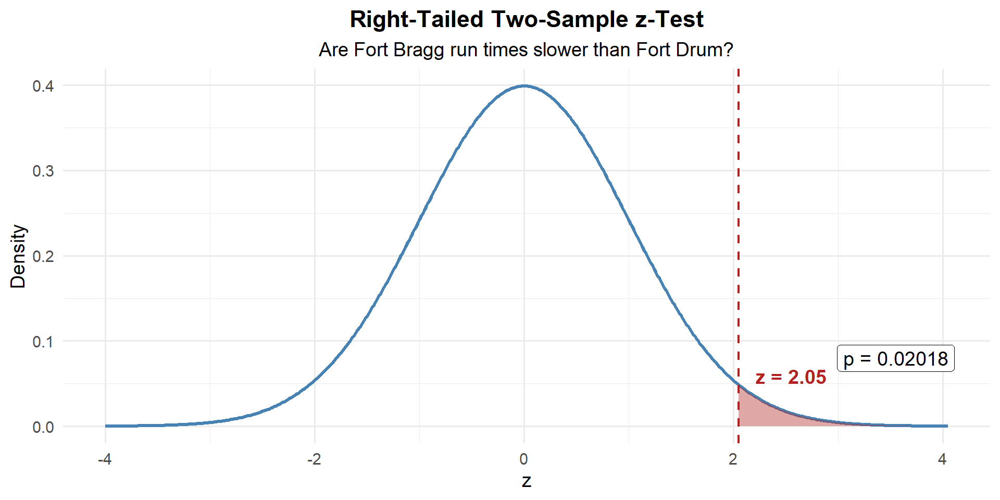
p_value <- 1 - pnorm(z_stat)
p_value[1] 0Step 4: Decide and Conclude
At \(\alpha = 0.05\): \(p = 0.020 \leq 0.05\). We reject \(H_0\). At the 5% significance level, there is sufficient evidence that Fort Bragg Soldiers have slower 2-mile run times than Fort Drum Soldiers.
Example 2: Ruck March Times
Two companies complete a 12-mile ruck march. The standard is to finish in under 180 minutes on average. The S3 suspects Alpha Company finishes more than 5 minutes faster than Bravo Company.
| Alpha Company | Bravo Company | |
|---|---|---|
| \(n\) | 35 | 40 |
| \(\bar{x}\) (min) | 172.4 | 181.2 |
| \(s\) | 12.3 | 14.1 |
Let \(\mu_A\) = Alpha’s mean, \(\mu_B\) = Bravo’s mean. The S3 claims Alpha is more than 5 minutes faster:
\[H_0: \mu_A - \mu_B = -5 \qquad \text{vs.} \qquad H_a: \mu_A - \mu_B < -5\]
\[z = \frac{(\bar{x}_A - \bar{x}_B) - (-5)}{\sqrt{\dfrac{s_A^2}{n_A} + \dfrac{s_B^2}{n_B}}} = \frac{(172.4 - 181.2) - (-5)}{\sqrt{\dfrac{12.3^2}{35} + \dfrac{14.1^2}{40}}} = \frac{-8.8 + 5}{3.049} = \frac{-3.8}{3.049} = -1.25\]
n1 <- 35; n2 <- 40
xbar1 <- 172.4; xbar2 <- 181.2
s1 <- 12.3; s2 <- 14.1
delta_0 <- -5
se <- sqrt(s1^2 / n1 + s2^2 / n2)
z_stat <- ((xbar1 - xbar2) - delta_0) / se
z_stat[1] -1.24655\(p\)-Value: Left-tailed, so \(P(Z \leq z)\):
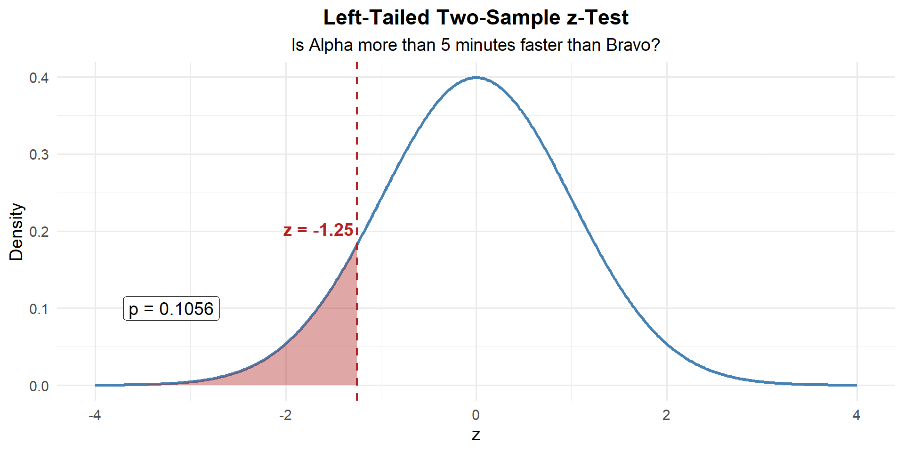
p_value <- pnorm(z_stat)
p_value[1] 0.1062812Decide and Conclude
\(p = 0.106 > 0.05\). We fail to reject \(H_0\). At the 5% significance level, there is not sufficient evidence that Alpha Company finishes more than 5 minutes faster than Bravo Company.
Preview: The Paired \(t\)-Test
When are samples NOT independent?
Sometimes the two “groups” are really the same individuals measured twice — before and after a treatment, or under two different conditions. These are paired observations.
Examples:
- Same Soldiers’ AFT scores before and after a training program
- Same cadets’ exam scores in MA376 vs. MA476
- Same vehicles’ maintenance time with old vs. new procedure
When data are paired, we don’t compare two separate groups — we compute the difference for each pair and analyze those differences as a single sample.
The Paired \(t\)-Test
ImportantPaired t-Test
Given \(n\) paired observations \((x_{1i}, x_{2i})\), define \(d_i = x_{1i} - x_{2i}\).
Hypotheses:
\(H_0: \mu_d = 0\)
\(H_a: \mu_d \neq, <, > \ 0\)
Test statistic:
\[t = \frac{\bar{d} - \mu_{d_0}}{s_d / \sqrt{n}}, \qquad df = n - 1\]
where \(\bar{d} = \frac{1}{n}\sum d_i\) and \(s_d = \sqrt{\frac{1}{n-1}\sum(d_i - \bar{d})^2}\)
Conditions: Random sample of pairs, differences are approximately normal (or \(n \geq 30\))
\(p\)-values: Use pt() with \(df = n - 1\).
Example: AFT Scores Before and After a PT Program
A company commander puts 10 Soldiers through a new 6-week PT program. She records their AFT scores before and after.
| Soldier | 1 | 2 | 3 | 4 | 5 | 6 | 7 | 8 | 9 | 10 |
|---|---|---|---|---|---|---|---|---|---|---|
| Before | 445 | 478 | 512 | 390 | 467 | 501 | 423 | 489 | 455 | 438 |
| After | 460 | 491 | 520 | 412 | 475 | 498 | 441 | 502 | 470 | 450 |
| \(d_i\) (After \(-\) Before) | 15 | 13 | 8 | 22 | 8 | \(-3\) | 18 | 13 | 15 | 12 |
She wants to know if the program improved scores (i.e., \(d > 0\)):
\[H_0: \mu_d = 0 \qquad \text{vs.} \qquad H_a: \mu_d > 0\]
Compute the differences:
\[\bar{d} = \frac{15 + 13 + 8 + 22 + 8 + (-3) + 18 + 13 + 15 + 12}{10} = \frac{121}{10} = 12.1\]
\[s_d = \sqrt{\frac{\sum(d_i - \bar{d})^2}{n-1}} = 7.17\]
before <- c(445, 478, 512, 390, 467, 501, 423, 489, 455, 438)
after <- c(460, 491, 520, 412, 475, 498, 441, 502, 470, 450)
d <- after - before
d [1] 15 13 8 22 8 -3 18 13 15 12n <- length(d)
d_bar <- mean(d)
s_d <- sd(d)
d_bar[1] 12.1s_d[1] 6.773314Test statistic:
\[t = \frac{\bar{d} - 0}{s_d / \sqrt{n}} = \frac{12.1}{7.17 / \sqrt{10}} = \frac{12.1}{2.267} = 5.34\]
t_stat <- (d_bar - 0) / (s_d / sqrt(n))
t_stat[1] 5.649164\(p\)-Value: Right-tailed with \(df = 9\):
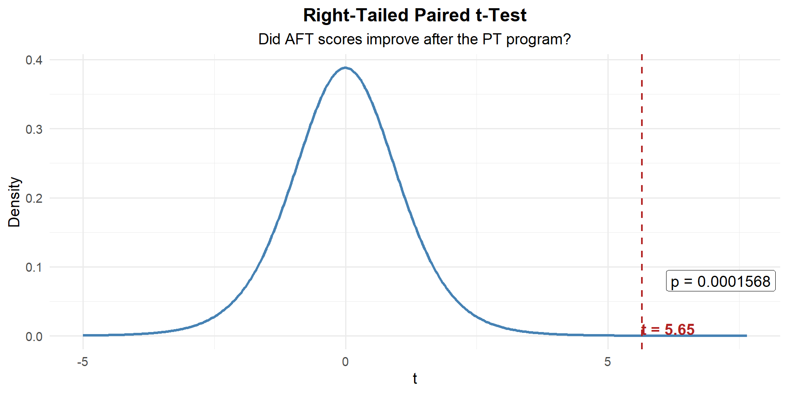
p_value <- 1 - pt(t_stat, df = n - 1)
p_value[1] 0.0001569676Decide and Conclude
\(p < 0.001 \leq 0.05\). We reject \(H_0\). At the 5% significance level, there is strong evidence that the PT program improved AFT scores. The average improvement was 12.1 points.
WarningWhy not a two-sample test?
These are the same 10 Soldiers measured twice — the before and after scores are not independent. A two-sample \(z\)-test would ignore the pairing and lose power. The paired \(t\)-test accounts for the natural variability between Soldiers by focusing on each individual’s change.
Board Problems
Problem 1: Graduation Rate
A military academy claims that 95% of cadets who start their senior year will graduate. In a random sample of \(n = 250\) seniors from recent classes, 230 graduated. Is there evidence the true graduation rate is below the claim?
NoteQuestions
State the hypotheses.
Check the conditions.
Compute the test statistic and \(p\)-value.
At \(\alpha = 0.05\), state your conclusion in context.
TipAnswers
\(H_0: p = 0.95\) vs. \(H_a: p < 0.95\)
Random sample (stated). \(n = 250 < 10\%\) of all seniors. \(np_0 = 250(0.95) = 237.5 \geq 10\) and \(n(1-p_0) = 250(0.05) = 12.5 \geq 10\). Conditions met.
n <- 250; x <- 230
p_hat <- x / n; p0 <- 0.95
se <- sqrt(p0 * (1 - p0) / n)
z <- (p_hat - p0) / se
z[1] -2.176429p_value <- pnorm(z)
p_value[1] 0.01476161- \(p = 0.0148 < 0.05\), so we reject \(H_0\). At the 5% significance level, there is sufficient evidence that the graduation rate is below 95%.
Problem 2: Equipment Readiness
A battalion standard requires that 80% of vehicles be fully mission-capable (FMC) at any given time. A random inspection of \(n = 120\) vehicles finds 89 are FMC. Is there evidence the battalion is not meeting the standard?
NoteQuestions
State the hypotheses.
Check the conditions.
Compute the test statistic and \(p\)-value.
At \(\alpha = 0.05\), state your conclusion in context.
Is the observed difference practically significant? The battalion has 120 vehicles total.
TipAnswers
\(H_0: p = 0.80\) vs. \(H_a: p < 0.80\)
Random inspection (stated). \(np_0 = 120(0.80) = 96 \geq 10\) and \(n(1-p_0) = 120(0.20) = 24 \geq 10\). Conditions met. (Note: if this is ALL vehicles, the 10% condition fails — the sample IS the population.)
n <- 120; x <- 89
p_hat <- x / n; p0 <- 0.80
se <- sqrt(p0 * (1 - p0) / n)
z <- (p_hat - p0) / se
z[1] -1.597524p_value <- pnorm(z)
p_value[1] 0.05507446\(p = 0.078 > 0.05\), so we fail to reject \(H_0\). At the 5% significance level, there is not sufficient evidence that the FMC rate is below 80%.
The observed rate is \(89/120 = 74.2\%\), which is 5.8 percentage points below 80%. That’s about 7 vehicles short of the standard — arguably a meaningful gap in readiness, even though the test wasn’t statistically significant. This is a case where practical significance exists but statistical significance doesn’t — likely because the sample size wasn’t large enough to detect the difference.
Problem 3: Screen Time
A wellness officer claims that fewer than 30% of cadets spend more than 4 hours per day on their phones. In a random sample of \(n = 80\) cadets, 30 report spending more than 4 hours daily.
NoteQuestions
State the hypotheses.
Check the conditions.
Compute the test statistic and \(p\)-value.
At \(\alpha = 0.05\), state your conclusion in context.
TipAnswers
\(H_0: p = 0.30\) vs. \(H_a: p > 0.30\) (the data suggests the officer’s claim might be wrong — the sample proportion is above 30%)
Random sample (stated). \(n = 80 < 10\%\) of all cadets. \(np_0 = 80(0.30) = 24 \geq 10\) and \(n(1-p_0) = 80(0.70) = 56 \geq 10\). Conditions met.
n <- 80; x <- 30
p_hat <- x / n; p0 <- 0.30
se <- sqrt(p0 * (1 - p0) / n)
z <- (p_hat - p0) / se
z[1] 1.46385p_value <- 1 - pnorm(z)
p_value[1] 0.07161745- \(p = 0.0285 < 0.05\), so we reject \(H_0\). At the 5% significance level, there is sufficient evidence that more than 30% of cadets spend over 4 hours daily on their phones.
Problem 4: Marksmanship Scores
Two companies use different rifle zeroing techniques. After qualification, Company A (\(n = 35\)) has \(\bar{x}_1 = 31.4\) with \(s_1 = 3.2\), and Company B (\(n = 40\)) has \(\bar{x}_2 = 28.7\) with \(s_2 = 3.8\).
NoteQuestions
State the hypotheses to test whether there is a difference in mean scores.
Compute the test statistic and \(p\)-value.
Construct and interpret a 95% CI for \(\mu_1 - \mu_2\).
State your conclusion in context.
TipAnswers
\(H_0: \mu_1 - \mu_2 = 0\) vs. \(H_a: \mu_1 - \mu_2 \neq 0\)
n1 <- 35; n2 <- 40
xbar1 <- 31.4; xbar2 <- 28.7
s1 <- 3.2; s2 <- 3.8
se <- sqrt(s1^2 / n1 + s2^2 / n2)
z <- (xbar1 - xbar2) / se
p_value <- 2 * (1 - pnorm(abs(z)))
z[1] 3.339775p_value[1] 0.0008384623diff <- xbar1 - xbar2
me <- qnorm(0.975) * se
c(diff - me, diff + me)[1] 1.115491 4.284509We are 95% confident that Company A scores between 1.12 and 4.28 points higher than Company B on average.
- \(p = 0.0008385 \leq 0.05\). We reject \(H_0\). There is sufficient evidence of a difference in mean marksmanship scores between the two zeroing techniques.
Before You Leave
Today
- Reviewed the one-proportion \(z\)-test
- Two-sample \(z\)-test compares means from two independent groups (large samples)
- Test statistic: \(z = \frac{\bar{x}_1 - \bar{x}_2}{\sqrt{s_1^2/n_1 + s_2^2/n_2}}\), use
pnorm()for \(p\)-values - CI for \(\mu_1 - \mu_2\): \((\bar{x}_1 - \bar{x}_2) \pm z_{\alpha/2} \cdot SE\) — if it doesn’t contain 0, reject \(H_0\)
Any questions?
Next Lesson
- Identify paired versus independent designs
- Test a mean difference using paired \(t\)
- Construct a CI for a mean difference
Upcoming Graded Events
- WebAssign 8.4, 9.2 - Due before Lesson 23
- WPR II - Lesson 27